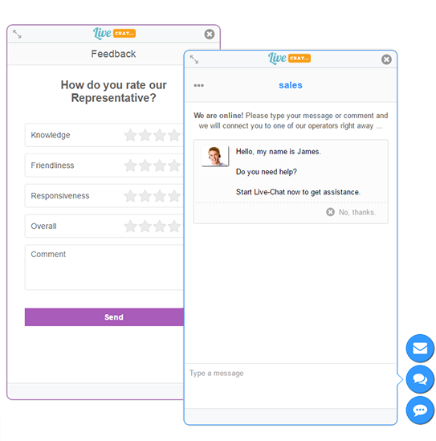
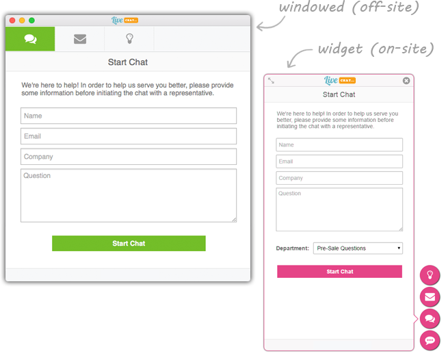
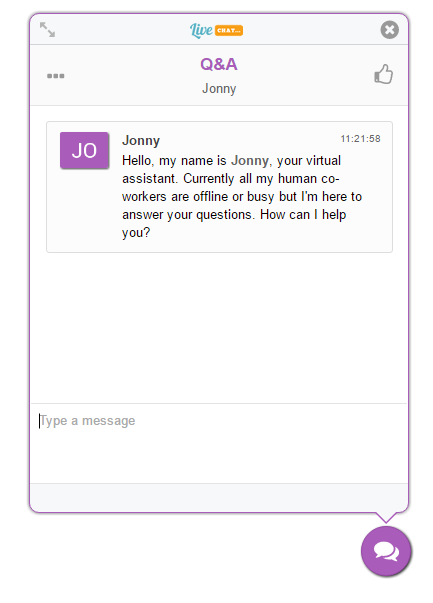
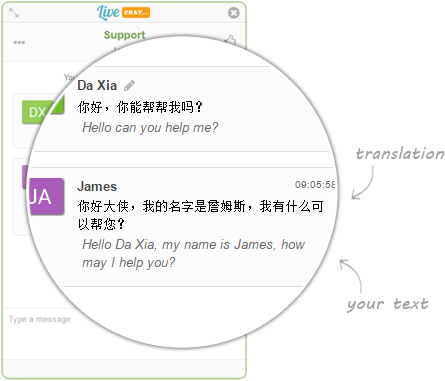
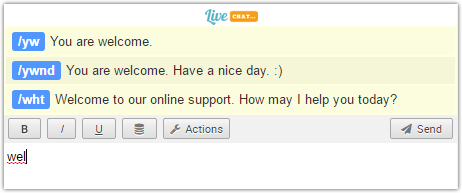
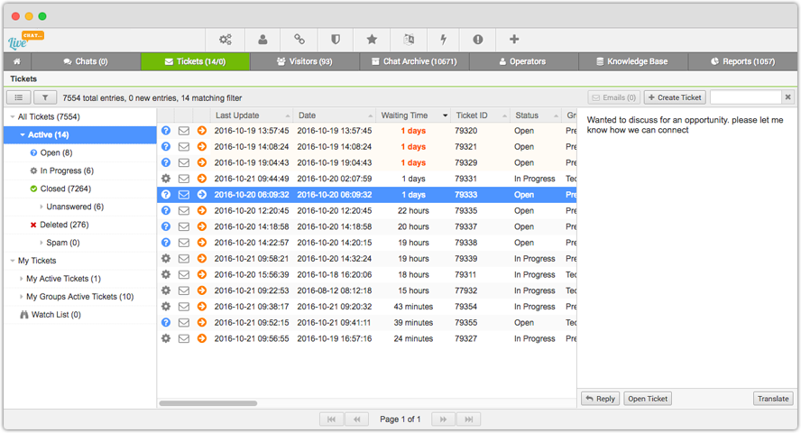
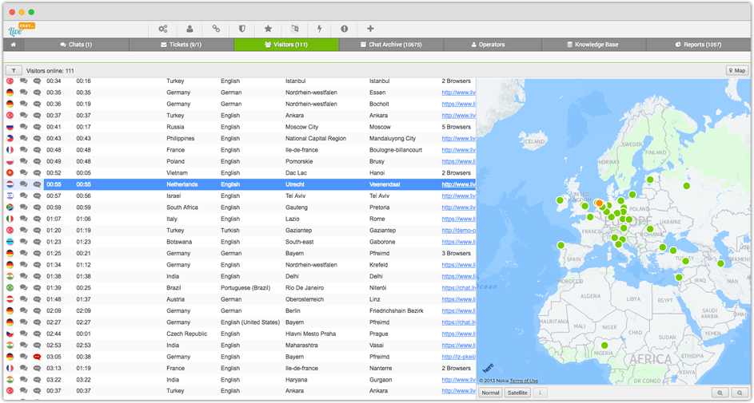

ფუნქციონალი
ლაივ ჩეთი
შიდა ჩეთის ფანჯარა ეს არის პირველი არჩევანი თქვენი ჩეთებისათვის. რომელიც პირდაპირ ინტეგრირდება თქვენს საიტზე და რომელიც ყველაზე თვალშისაცემია თქვენი მომხმარებლებისათვის.
პოპაპ ჩეთის ფანჯარა
საპორტის შემთხვევაში ეს საუკეთესო არჩევანია რადგანაც ამ დროს შესაძლებელია ჩეთის ფანჯრის ცალკე ფანჯარაში გახსნა ხოლო მომხამრებელი თავისუფლად განაგრძობს თქვენს საიტზე სხვადასხვა გვერდებზე გადასვლას. თუმცა ეს ფანჯარა უფრო ნაკლებად იქცევს ყურადღებას ვიდრე შიდა ჩეთის ფანჯარა


ლაივ ჩეთი
ლაივჩეთი გთავაზობთ ორი ტიპის ჩეთის ფანჯარას. შეგიძლიათ მარტივად ჩასვათ ჩეთის ფანჯარა საიტზე ან გამოიყენოთ პოპაპი.
შიდა ჩეთის ფანჯარა
ეს არის ყველაზე სწრაფი გზა დაუკავშირდეთ თქვენს მომხმარებელს პირდაპირ საიტიდან და აგრეთვე მომხმარებლების პირველი არჩევანი ჩეთის დროს.
Pop-Up ჩეთის ფანჯარა
ეს არჩევანი უკეთესია თქვენი საპორტის შემთხვევაში; ამ დროს მომხარებელს შეუძლია გახსნას ჩეთი ცალკე ფანჯარაში და განაგრძოს ვებ გვერდთან გაცნობა. შიდა ჩეთის ფანჯარასთან შედარებით ამ ფანჯარას აქვს უფრო მეტი ფუნქციონალი, მაგალითად, როგორიცაა ფაილის გაგზავნა.
ჩეთ ბოტები / ვირტუალური დამხმარე
თქვენ არ შეგიძლიათ იყოთ ონლაინში 24/7-ზე?
ეს არ წარმოადგენს პრობლემას, ჩეთ ბოტები შესთავაზებენ პროდუქციას თქვენს ნაცვლად ან უპასუხებენ ხშირად დასმულ შეკითხვებს.
ლაივჩეთის ვირტუალური თანაშემწე არის lifelike აგენტი რომელიც უზრუნველყოფს ინტერაქტიული გზით თქვენი კლიენტებისა და ვებ გვერდის ვიზიტორების დახმარებას 24 საათის განმავლობაში, კვირაში 7 დღე.
თქვენ მიიღებთ თითოეული ჩეთის ტრანსკრიპტს ელ-ფოსტაზე ან შეგიძლიათ თავად შეუერთდეთ ნებისმიერ ჩეთს და ჩაერთოთ ლაპარაკში.
ლაივჩეთის ლაივ ასისტანსი ამცირებს საპორტის ადამიანური რესურსის აუცილებლობას, ამცირებს ონლაინში ლოდინის დროს და აუმჯობესებს მომხმარებელთან ურთიერთობის ხარისხს.


თარგმანი რეალურ დროში
ონლაინ რეჟიმში თარგმანის სისტემა დაგეხმარებათ ესაუბროთ თქვენ მომხმარებლებს, რომლებიც თქვენთის უცხო ენაზე საუბრობენ, გაიგოთ მათი კითხვა და უპასუხოთ მათივე ენაზე.
ლაივჩეთის თარგმანი დაფუძნებულია Google® Translate Version 2-ზე, და შეუძლია პირდაპირ რეჟიმში თარგმნოს ნებისმიერი ტექსტი თქვენთვის სასურველ ენაზე.
*ყველა ძირითადი ენა შესულია თარგმანის სისტემაში.
შორთკატები და სწრაფი ძებნა
ხშირ შემთხვევებში თქვენ გიწევთ ერთი და იგივე კითხვებზე პასუხების გაცემა, თქვენ არ დაგჭირდებათ თითოეულისათვის ერთნაირი პასუხების გაცემა, ამის ნაცვლად შეგიძლიათ გამოიყენოთ უკვე გამზადებული პასუხები შორთკატების მეშვეობით და დაამატოთ შორტკატებში ახალი პასუხები.
აგრეთვე ჩაშენებული სწრაფი ძიების სისტემა დაგეხმარებათ ცოდნის ბაზაში სწრაფად მოიძიოთ შესაფერისი საპასუხო ფრაზა და გაუგზავნოთ მომხამრებელს.

თიქეთინგის სისტემა
ლაივჩეთი შეინახავს ყველა კომუნიკაციას, რომელსაც აწარმოებთ თქვენს კლიენტთან. თქვენ შეგიძლიათ შექმნათ თიქეთები და დააორგანიზოთ თქვენი სამუშაო სისტემა იმისათვის, რომ მაქსიმალურად დაეხმაროთ თქვენს მომხმარებლებს. ყველა თქვენი საუბარი მომხმარებელთან (მიმოწერა, ელ-ფოსტა, ზარი) შეინახება თქვენი მომხმარებლის ისტორიაში.
მონიტორინგი რეალურ დროში
ლაივჩეთის მომხმარებლების მონიტორინგის ინტეგრირებული ფუნქციონალი გაძლევთ საშუალებას რეალურ დროში ადევნოთ თვალყური თუ ვინ იმყოფება თქვენს ვებ გვერდზე, რომელი ქვეყნიდან, ქალაქიდან, რეგიონიდან, რა საკვანძო სიტყვა გამოიყენეს მათ, რომ თქვენს ვებ გვერდზე მოხვედრილიყვნენ და რა გვერდებს ათვალიერებენ თქვენს ვებ გვერდზე, თქვენ შეგიძლიათ ღირებული მარკეტინგული იფნრომაცია მოიპოვოთ თითოეულ მოხმმარებელზე და ისე გაუწიოთ მათ დახმარება.